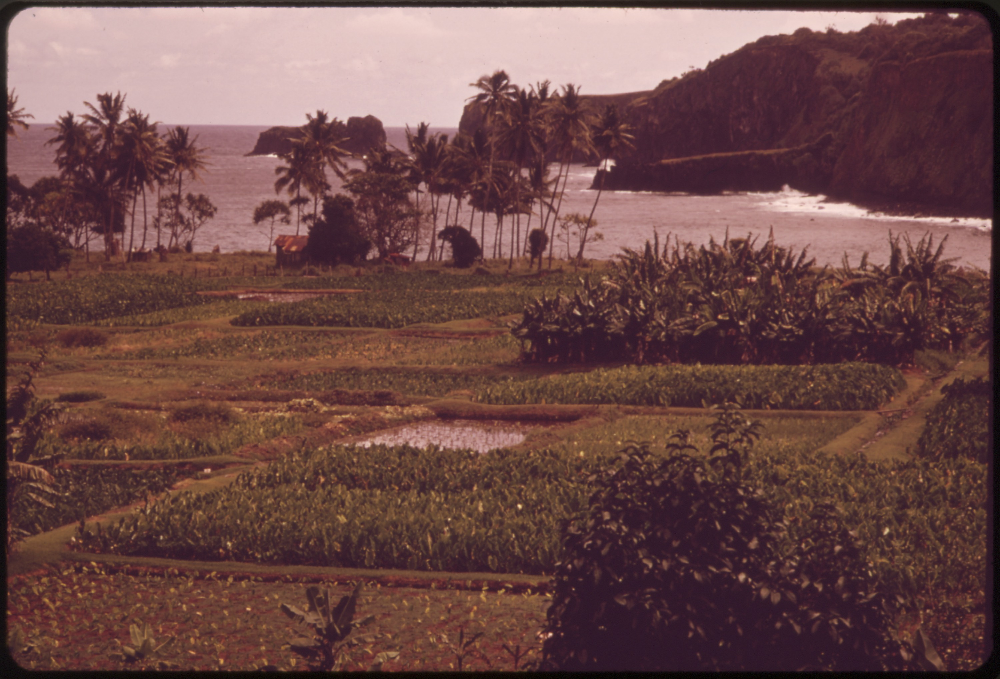
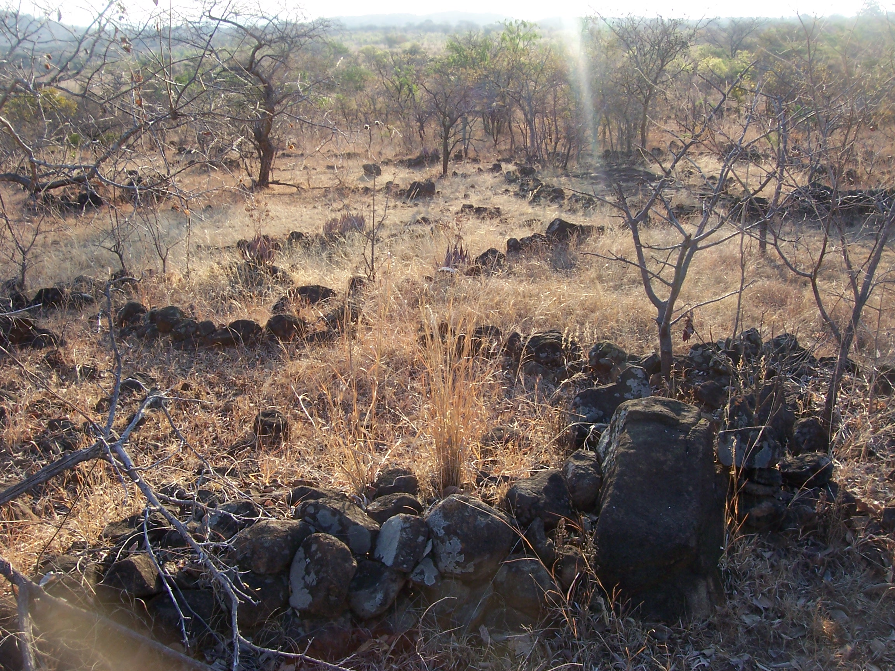

Water & Agriculture Across Cultures
Water management and agriculture are important parts of human history. Communities have developed farming practices suited to their environments, available resources, and cultural traditions.
Native Hawaiian Agriculture
Loʻi Kalo and ʻAuwai

Taro patches along Highway 36, Maui, Hawaiʻi (November 1973). Photograph by Charles O'Rear for the U.S. Environmental Protection Agency (DOCUMERICA). U.S. National Archives, ID 554077. Original image and rights information. Public domain (U.S. federal government work).

Native Hawaiian agricultural systems include loʻi kalo, irrigated fields used for cultivating kalo (taro). Water can be directed through channels called ʻauwai.
These systems demonstrate knowledge of water flow, land management, and the relationship between agriculture and the environment.
Agriculture in Southern Africa: Nyanga, Zimbabwe
Historic Terracing and Environmental Knowledge

Historic terraced landscape, Nyanga, Zimbabwe. Photograph by Damien Farrell (2006). Original image and attribution. Licensed under CC BY-SA 3.0. Image displayed without intentional alteration.

Bantu-speaking communities across southern Africa have practiced agriculture using knowledge of seasonal rainfall, soils, crops, and livestock.
The historic terraced landscape of Nyanga, Zimbabwe, provides an example of extensive landscape modification. The functions of particular terraces remain subjects of archaeological study, so they should not all be assumed to have been irrigated fields.
Comparative Interpretation
Hawaiian irrigated kalo cultivation and historic terracing in Zimbabwe illustrate different approaches to producing food and managing natural resources.
Comparing these practices helps us understand how environmental knowledge develops within particular cultural and geographic settings.
Future Research
Future research will examine specific farming communities, historical agricultural techniques, and documented examples of traditional water management in southern Africa and Hawaiʻi.